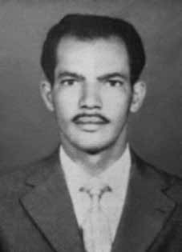

Péricles
Gusmão
Regis
CIRCUNSTÂNCIAS DA MORTE
Péricles Gusmão Régis morreu em 12 de maio de 1964, após ser preso no dia 6 do mesmo mês, juntamente com outras 20 pessoas, sob as ordens do então capitão Antônio Bendochi Alves, vinculado ao 19º. Batalhão de Caçadores, com sede em Salvador – BA, para recolhimento ao 9º Batalhão de Polícia Militar de Vitória da Conquista – BA, no intuito de responder a um Inquérito Policial Militar (IPM), em razão de suposto crime contra a segurança nacional.
Já no dia 11 de maio de 1964, por volta de 7 horas, foi retirado de sua cela e submetido a um longo interrogatório, que durou até 2 horas da madrugada do dia seguinte. Quando retornou à cela, estava muito deprimido e transtornado, conforme depoimento de outros presos políticos. Em seguida, foi colocado sozinho em uma cela. Horas depois, um recruta, que estava ali de serviço, deu a notícia da morte de Péricles, que, segundo sua versão, se encontrava morto na cela, em consequência de suicídio.
De acordo com a versão divulgada pelos órgãos de repressão – e constante em sua certidão de óbito, a morte teria sido ocasionada por suicídio, após Péricles ter cortado, com uma gilete, seus pulsos, pescoço e braços. A causa da morte não foi atestada por um legista, mas pelo médico oftalmologista Hugo de Castro Lima, preso na mesma época, sob as acusações do mesmo IPM, que atestou “anemia aguda, devido à hemorragia externa, devido à seção de vasos sanguíneos (suicídio)”.
De acordo com o relato de Hermann Gusmão Prates, anexado ao processo da CEMDP, o corpo apresentava diversos hematomas e ferimentos. Familiares e amigos contestaram a versão de suicídio. O relator da CEMDP, João Grandino Rodas, mencionou em seu voto que, nos depoimentos das testemunhas, restou inequívoca a militância política de Péricles, causa da sua prisão no quartel da Polícia Militar, quando teria “sido acusado de participação em atividades políticas, faleceu por causas não naturais, muito provavelmente por suicídio, em dependência policial militar”.
O reconhecimento da morte de Péricles Gusmão Régis como responsabilidade do Estado foi aprovado por unanimidade, com ressalva à versão de suicídio, apresentada pelos conselheiros Suzana Keniger Lisbôa e Nilmário Miranda.
Péricles Gusmão Régis died on May 12, 1964, after being arrested on the 6th of the same month, along with 20 other people, under the orders of then captain Antônio Bendochi Alves, linked to the 19th. Battalion of Hunters, based in Salvador – BA, to be sent to the 9th Military Police Battalion of Vitória da Conquista – BA, in order to respond to a Military Police Inquiry (IPM), due to an alleged crime against national security.
On May 11, 1964, around 7 am, he was taken from his cell and subjected to a long interrogation, which lasted until 2 am the following day. When he returned to his cell, he was very depressed and upset, according to testimony from other political prisoners. He was then placed alone in a cell. Hours later, a recruit, who was there on duty, broke the news of Pericles' death, who, according to his version, was dead in his cell, as a result of suicide.
According to the version released by the law enforcement agencies - and included in his death certificate, the death would have been caused by suicide, after Pericles had cut his wrists, neck and arms with a razor. The cause of death was not certified by a coroner, but by the ophthalmologist Hugo de Castro Lima, arrested at the same time, on charges from the same IPM, who certified “acute anemia, due to external hemorrhage, due to the section of blood vessels (suicide)”.
According to the report by Hermann Gusmão Prates, attached to the CEMDP process, the body had several bruises and injuries. Family and friends disputed the suicide version. The CEMDP rapporteur, João Grandino Rodas, mentioned in his vote that, in the testimonies of the witnesses, Péricles' political activism was unequivocal, the reason for his arrest in the Military Police barracks, when he had “been accused of participating in political activities, he died of unnatural causes, most likely by suicide, in military police custody”.
The recognition of the death of Péricles Gusmão Régis as the responsibility of the State was unanimously approved, with exception to the version of suicide, presented by counselors Suzana Keniger Lisbôa and Nilmário Miranda.
Péricles Gusmão Régis murió el 12 de mayo de 1964, tras ser detenido el día 6 del mismo mes, junto con otras 20 personas, bajo las órdenes del entonces capitán Antônio Bendochi Alves, vinculado al 19. Batallón de Cazadores, con base en Salvador – BA, será enviado al 9º Batallón de Policía Militar de Vitória da Conquista – BA, para responder a una Investigación de la Policía Militar (IPM), por presunto delito contra la seguridad nacional.
El 11 de mayo de 1964, alrededor de las 7 de la mañana, fue sacado de su celda y sometido a un largo interrogatorio, que se prolongó hasta las 2 de la madrugada del día siguiente. Cuando regresó a su celda estaba muy deprimido y alterado, según testimonios de otros presos políticos. Luego lo encerraron solo en una celda. Horas más tarde, un recluta, que se encontraba allí de servicio, dio la noticia de la muerte de Pericles, quien, según su versión, estaba muerto en su celda, como consecuencia de un suicidio.
Según la versión difundida por las fuerzas del orden, e incluida en su certificado de defunción, la muerte habría sido provocada por suicidio, después de que Pericles le cortara las muñecas, el cuello y los brazos con una navaja. La causa de la muerte no fue certificada por un médico forense, sino por el oftalmólogo Hugo de Castro Lima, detenido al mismo tiempo, por cargos del mismo IPM, quien certificó “anemia aguda, por hemorragia externa, por sección de vasos sanguíneos (suicidio)”.
Según el informe de Hermann Gusmão Prates, adscrito al proceso del CEMDP, el cuerpo presentaba varios hematomas y heridas. Familiares y amigos cuestionaron la versión del suicidio. El relator del CEMDP, João Grandino Rodas, mencionó en su votación que, en los testimonios de los testigos, el activismo político de Péricles era inequívoco, motivo de su detención en el cuartel de la Policía Militar, cuando “había sido acusado de participar en actividades políticas, murió por causas no naturales, probablemente por suicidio, bajo custodia de la policía militar”.
El reconocimiento de la muerte de Péricles Gusmão Régis como responsabilidad del Estado fue aprobado por unanimidad, con excepción de la versión de suicidio, presentada por los consejeros Suzana Keniger Lisbôa y Nilmário Miranda.